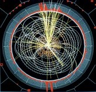

SPS Events
 |
Events:
UO Duck Preview and Tour of the Parthasarathy Lab "Crude Awakening" Film on Peak Oil and the current energy crisis Tour of the Accelerator in Volcanology Building Basement Stan's Science Circus
Barnhart Science BBQ Ice Cream Social with Faculty
|